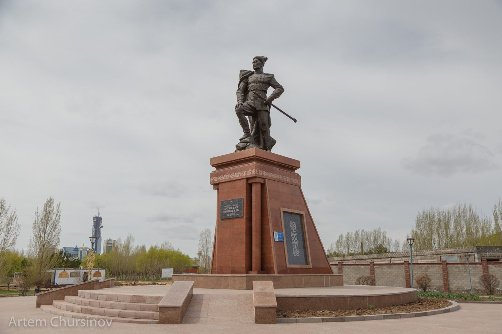

Фотосурет уақытша жүктелмеді')">Бауыржан Момышұлы (1910–1982) — әскери қолбасшы, жазушы және Екінші дүниежүзілік соғыс қаһарманы. Оның еңбектері ерлік, тәртіп пен адамгершілік тақырыптарын қозғайды.
Қосымша ақпарат: www.astana-akshamy.kz
Сурет: https://adebiportal.kz/kz/news/view/zana-qalanyn-eski-oramdary__22690